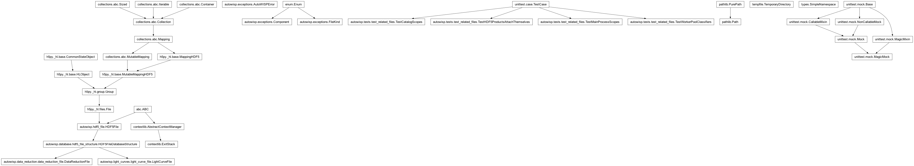
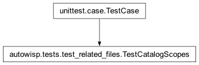
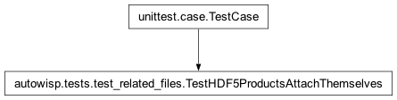
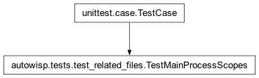
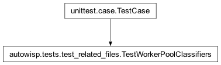

autowisp.tests.test_related_files module
Class Inheritance Diagram

Unit tests for the per-step related_files classifiers (item 9).
Each parallel/step site turns its work item (plus any batch-constant
auxiliary inputs) into RelatedFile entries, so an error carries
the artifact(s) it was about. Every test here drives the real step or
call site rather than a helper in isolation, in one of two ways matching
how the site works:
main-process steps scope the context themselves, so the first call inside the scope is stubbed to raise and the assertion is on the related files the capture boundary stamps onto the escaping error – never on the ambient context read from inside the scope, which proves only that the scope exists, not that anything reaches the error;
run_poolsites hand a classifier to the pool for the workers to apply, sorun_poolis intercepted and the classifier it was given is applied to a sample item.
The generic scoping machinery (worker transport, crash promotion, dedup)
is covered in test_error_context.py.
- class autowisp.tests.test_related_files.TestCatalogScopes(methodName='runTest')[source]
Bases:
_StampedFilesMixin,TestCase
The catalog is named by the step that uses it, not by the query.
ensure_catalogresolves the{checksum}filename and returns, long before its caller is done with it, so each consumer scopes the returned name around its own work. These stub the query and fail the work below it, which is what would break if a scope were ever moved back down intoensure_catalog.- catalog_fname = '/MASTERS/Gaia/abc123.fits'
- test_fit_star_shape_names_the_catalog_it_fits_against()[source]
The catalog covers the whole frame-set fit, not just the query.
fit_frame_settakes its own argument list rather than the manager’s, and derives DR names from real FITS headers before it reaches the catalog, so those two steps are stubbed out. The failure is injected after the source-list creator is built, which is exactly what a scope left insideensure_catalog(or insidecreate_source_list_creator) would fail to report.
- class autowisp.tests.test_related_files.TestHDF5ProductsAttachThemselves(methodName='runTest')[source]
Bases:
_StampedFilesMixin,TestCase
DR and lightcurve files scope themselves while open.
This is what replaced the per-step DR/LC scopes: every pipeline HDF5 product opened through a
withblock attaches itself, so a step that simply opens one needs no scoping code of its own.Unlike the rest of the module these use real products, which needs a throwaway project home for the layout lookup.
- test_in_memory_product_attaches_nothing()[source]
The nameless in-memory products have no file to report.
- test_merit_step_names_the_dr_it_failed_on()[source]
calculate_photref_meritreports the DR it was scoring.
- test_nested_products_all_attach()[source]
A lightcurve opened inside a DR block adds to it, not replaces.
- test_psf_map_step_names_the_dr_it_failed_on()[source]
fit_source_extracted_psf_mapreports the DR it was reading.Nothing is stubbed: the step is handed a DR that lacks the datasets it needs and fails on its own inside the block that opened it. That is what makes this catch a later refactor which narrows the
withso the work no longer happens while the file is open – a regression the hook’s own tests cannot see.
- class autowisp.tests.test_related_files.TestMainProcessScopes(methodName='runTest')[source]
Bases:
_StampedFilesMixin,TestCase
The main-process steps, exercised through their real dispatch.
These build their
RelatedFileentries at the scope rather than in a classifier, so each test runs the actual step with the first call inside the scope stubbed to raise – which also stops the step before it reaches any database, FITS or HDF5 access.The assertion is on the stamped exception, not on the live ambient context. That distinction is the whole point: the scope’s
withunwinds (resetting the ContextVar) before any enclosingexceptruns, so a test that reads the context from inside the scope passes even when nothing ever reaches the error. What the pipeline actually depends on is whatcapture_errors– the boundary atProcessingManager._run_step– ends up putting on the error.- test_add_images_to_db_scopes_the_raw_image()[source]
The raw image is in scope before any DB work begins.
The odd one out: this step takes no progress callbacks, so it cannot use
_stamped_step_filesand fails through a patch instead.Evaluatoris the first call inside the scope and runs beforestart_db_session, so stubbing it also keeps the test away from the database entirely.
- test_calibrate_scopes_the_raw_image_and_masters()[source]
Channel-keyed master dicts contribute one entry per channel.
Calibratoris built before the loop and its constructor opens the masters, so it is stubbed out; everything from the scope down is the real step.
- test_calibrate_without_masters_scopes_only_the_image()[source]
With no masters configured, only the raw image is attached.
- test_stack_to_master_flat_scopes_both_masters()[source]
The flat stacker attaches the high and low masters it writes.
The step consumes a large, interdependent configuration, so this uses the step’s own parser defaults rather than a hand-built dict.
- test_stack_to_master_scopes_frames_and_master()[source]
Stacking scopes every input frame plus the master it writes.
mark_startis injected by the manager and is the first call inside the scope, so failing through it needs no patching of the step itself – onlyget_master_fname, which would otherwise open the first frame to build the name.
- class autowisp.tests.test_related_files.TestWorkerPoolClassifiers(methodName='runTest')[source]
Bases:
TestCase
The
run_poolsites, checked through the call that wires them up.These steps do not scope the context themselves: they hand
run_poola classifier and_WorkerEntryapplies it inside each worker. That mechanism – including transport back to the parent, crash promotion and dedup – is covered intest_error_context.py, so what is left to check per step is which classifier it passes and what that classifier makes of an item. Each test therefore runs the real call site withrun_poolintercepted, then applies the classifier it was handed.- _captured_classifier(module, run, pool_result=())[source]
Run
run, returning therelated_filesits pool was given.
- _detrending_classifier(**config)[source]
The classifier
apply_parallel_correctionpasses for a run.
- _magfit_classifier(master_photref_fname)[source]
The classifier
single_iterationpasses for a magfit run.
- test_detrending_passes_lightcurve_and_photref()[source]
epd/tfa attach the light curve plus the single photref.
- test_detrending_without_photref_passes_only_the_lightcurve()[source]
With no single photref configured, only the LC is attached.
- test_fit_star_shape_passes_the_frame_set()[source]
Every frame of a simultaneous-fit set is attached, not just one.
- class autowisp.tests.test_related_files._StampedFilesMixin[source]
Bases:
objectRun something behind a capture boundary and inspect the error.
- static _raise_stub(*_args, **_kwargs)[source]
Stand in for the first call inside a scope; always raises.
- _stamped_files(run)[source]
Return the related files on the error escaping
run.Wraps
runin the same capture boundary the manager applies to a step, so this reproduces the real path: the code raises, its scopes unwind, and the boundary stamps whatever survived.
- _stamped_step_files(step, collection, config=None, **patches)[source]
Fail
stepinside its scope; return the files it reports.Covers the steps sharing the manager’s calling convention
(collection, start_status, configuration, mark_start, mark_end):mark_startis the first call inside the scope, so passing the raising stub for it fails the step exactly there, with no need to patch the step itself.- Parameters:
step (callable) – The step function to run.
collection – The images / DR files to hand it.
config (dict or None) – Its configuration; empty if omitted.
patches – Attributes of the step’s own module to replace for the duration – the objects built before the loop that would otherwise reach real files (a
Calibrator, a master-filename resolver).
- Returns:
(kind, path)pairs from the stamped error.- Return type:
- exception autowisp.tests.test_related_files._StubRaise[source]
Bases:
ExceptionRaised by a stubbed per-item call to stop the step right there.
- autowisp.tests.test_related_files._pairs(related)[source]
The
(kind, posix path)entries, for comparison in a test.Always compared with
assertCountEqual: the order in which related files appear carries no meaning (nothing downstream depends on it – the renderer just lists them and the artifact-FK lookup is an SQLIN), so pinning it would over-constrain the implementation. Counting rather than a set still catches a missing entry, an unexpected extra one, and an accidental duplicate.